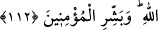

Ey bakası olmayan dünyaya sarılan,
Aldanmış ve aldatıcı olarak akşamlayıp sabahlayan kişi!
Dünyayı kucaklamayı terketmen gerekmez miydi?!
Firdevs (cennetinde) bâkireleri kucaklayabilmen için.
Ebedî cennetlerde sâkin olmayı istiyorsan,
(Cehennem) ateşinden emin olmaman gerekir.
112. Tevbe edenler, ibadet edenler, hamdedenler, seyahat edenler, rükû edenler,
secde edenler, ma’rufu emredip münkerden men edenler ve Allah’ın sınırlarını
koruyanlar... İşte o müminleri müjdele.
“Tevbe edenler” Bir önceki âyette zikredilen mücâhidler gibi tevbe edenler, ibadet
edenler, hamdedenler... de cennetliktir, mânâsınadır. Bu takdire göre Allah’ın cennet
vaadi, hem mücâhidler hem de cihada karşı çıkmamak ve onu terk etmeyi kastetmemek
şartıyla cihad etmemiş olan diğer müminler için geçerlidir.
Âyetteki “tevbe edenler” ile şirkten, münâfıklıktan ve küçük-büyük her türlü günahtan
tevbe edenler kastedilmektedir. Tevbe aslında “dönmek” demektir. Kulun tevbe etmesi
demek, cezayı (gerektiren şeylerden, Allah’ın) af ve rahmetini (celbeden şeylere)
dönmesi demektir. Tevbenin derhal yapılması gerekir. Ayrıca tevbeden önce terk edilen
günahın günah olduğunun bilinmesi lazımdır.
Tevbenin kabul edildiğinin dört alâmeti vardır:
1. Tevbe eden kimsenin, fâsıklarla olan ilişkisini tamamen kesmesi. Sâlih zatlarla
birlikte olması ve nerede olurlarsa olsunlar onların meclislerine devam etmesi.
2. İbadetlerle meşgul olması. Çünkü insan gerçekten kalbiyle dönüş yaptığı zaman,
bütün uzuvların yaratılış gayesine boyun eğdiği müşâhade edilir. Bir ağacın kökü iyi
olduğu zaman dalı meyva verir.
3. Ondan dünya sevincinin gitmesi. Çünkü Allah’a yönelen kimse O’nun dışındaki bir
şeyle sevinmez. Nitekim Hz. Peygamber (a.s.) sürekli hüzün ve tefekkür halinde idi.
4. Tevbe eden kimsenin gönlünü, Allah’ın kendisi için kefil olduğu rızık konusunda
değil, Allah Teâlâ’nın emrettiği şeylerle meşgul etmesi. Allah Teâlâ bir (hadis-i
kudsîde) buyurmuştur ki: “Ey Âdemoğlu! Ben seni önce topraktan, ardından da
nutfeden yarattım. Seni yoktan yaratmak beni yorup acze düşürmedi de yaşadığın
sürede sana ekmek vermek mi beni yoracak?”
Tevbe eden kimsede bu alâmetler bulunduğu zaman, müslümanların onu sevmeleri
lazımdır. Çünkü Allah onu sevmiştir. Müslümanların ayrıca Allah’ın onu tevbesinde